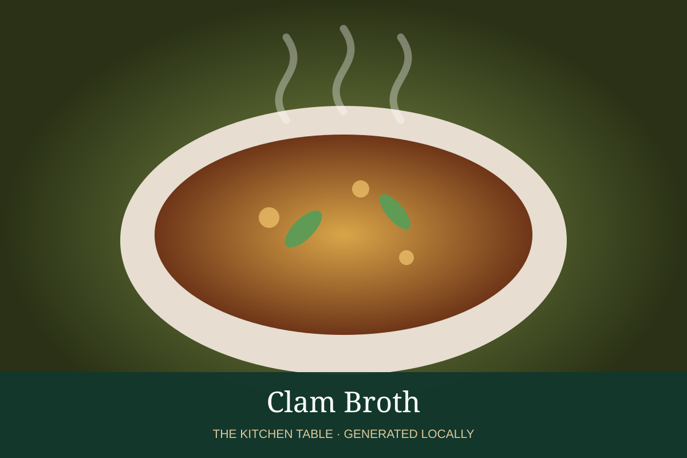

← Back to all recipes
BROTH & STOCK · SEAFOOD
Clam Broth
Briny clam broth for chowders, pasta, sauces, and seafood soups.
Broth & StockSeafood

Ingredients
- 4 lb littleneck or cherrystone clams
- 2 cups water
- 1 cup dry white wine
- 2 garlic cloves
- Parsley stems
Preparation
- Scrub clams thoroughly.
- Steam with water, wine, garlic, and parsley until shells open.
- Remove clams and strain liquid through a fine cloth to remove grit.
- Use immediately or chill rapidly.
Related Recipes
Recipes Using or Pairing with This Broth
Spaghetti with Mussels → · Moules Marinières → · White Wine & Garlic Mussels → · Cioppino →